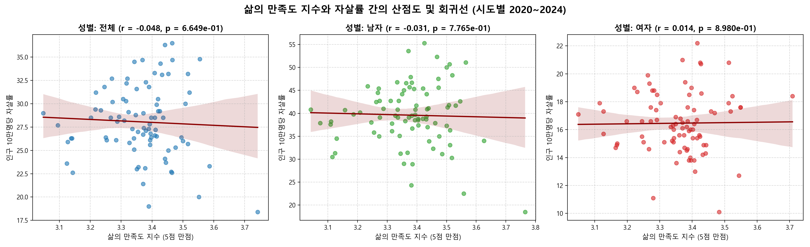

1. 분석 요약 (Executive Summary)
본 대시보드는 2020년부터 2024년까지의 대한민국 17개 시도별 삶의 만족도 및 자살률 통계를 정밀 결합하여 상관성을 다차원적으로 검토했습니다.
2. 데이터 정의 및 방법론
사용된 원본 데이터는 다음과 같은 통계청 공식 공개 통계표에서 가공되었습니다.
🔹 삶의 만족도: 사회조사(2020~2024). "현재 삶에 얼마나 만족하십니까?" 5점 척도 가중 합산 지수 산출.
🔹 자살률: 사망원인통계(2020~2024). 연간 인구 10만 명당 자살 사망자 수.
3. 시도별 5개년 평균 데이터 비교
아래 표는 17개 시도별 5개년 평균 수치입니다. 열 제목을 클릭하여 원하는 지표 순서대로 데이터를 실시간 **정렬**할 수 있습니다.
| 행정구역 | 만족도 지수 (5점 만점) | 만족율 (%) | 불만족율 (%) | 평균 자살률 (10만명당) |
|---|
※ 세종시는 자살률이 최저이며 만족도가 가장 높은 우수한 아웃라이어이며, 충청남도는 높은 만족도에도 불구하고 자살률이 최고인 디커플링 아웃라이어입니다.
4. 시간적 추이 분석
전국 평균 지표의 5개년 흐름을 통해 최근 대한민국의 자살 고위험 경향을 포착했습니다.
반면, 전국 자살률은 2022년 25.2명에서 2023년 27.3명, 2024년 29.1명으로 급격한 연쇄 상승세를 보여 만족도 지표 안정과 실질 자살 고위험층의 분리 현상이 명확히 진단되었습니다. 이는 거시경제 스트레스(물가, 금리) 가중이 심리적 회복력을 넘어서 극단적인 행동을 유발하는 실질 원인임을 시사합니다.
5. 상관관계 시각화 갤러리
분석 과정에서 생성된 6종의 다각적 시각화 그래프를 아래 탭에서 선택해 확대 및 분석 설명과 함께 감상할 수 있습니다. 이미지를 클릭하면 고해상도 전체화면 보기(라이트박스)가 활성화됩니다.

6. 결론 및 정책 시사점
상관분석 및 시계열 흐름을 통해 다음과 같은 정책적 해결책을 도출할 수 있습니다.
📍주관 정서와 예방 인프라 분리
주민들의 만족도 평균이 높다 하여(예: 충남 3.44점) 자살 예방 안전망 투자를 감축하는 과오를 경계해야 합니다. 주관적 평가는 실질 고위험군(소외 노인층, 빈곤 가구)의 지표를 상쇄시키는 평균 편향이 있으므로 복지 밀착 지도 수립이 필요합니다.
📍남성 위기 대응책 다각화
남성의 자살 사망률은 여성에 비해 2.33배 높으나 주관 만족감 차이는 0.01점에 불과합니다. 남성들의 위기 신호 표출 방식 및 자조 집단 활성화 지원, 그리고 우울증 조기진단 연계 방식을 맞춤형으로 개설할 시점입니다.
📍최근 자살 급증 추세 긴급 중재
2022~2024년 전국 평균 자살률의 폭발적 증가(25.2명 $\rightarrow$ 29.1명)는 거시경제 지표 악화와 연계될 확률이 큽니다. 지방정부와 복지재단이 결합하여 생계형 독촉 제한, 자영업 폐업층 특별 심리 상담망 운영 등 다이렉트 긴급 개입 정책이 병행되어야 합니다.